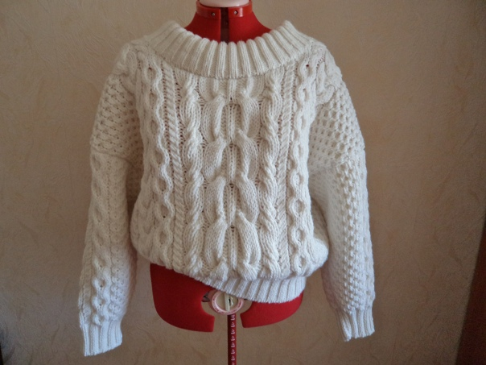
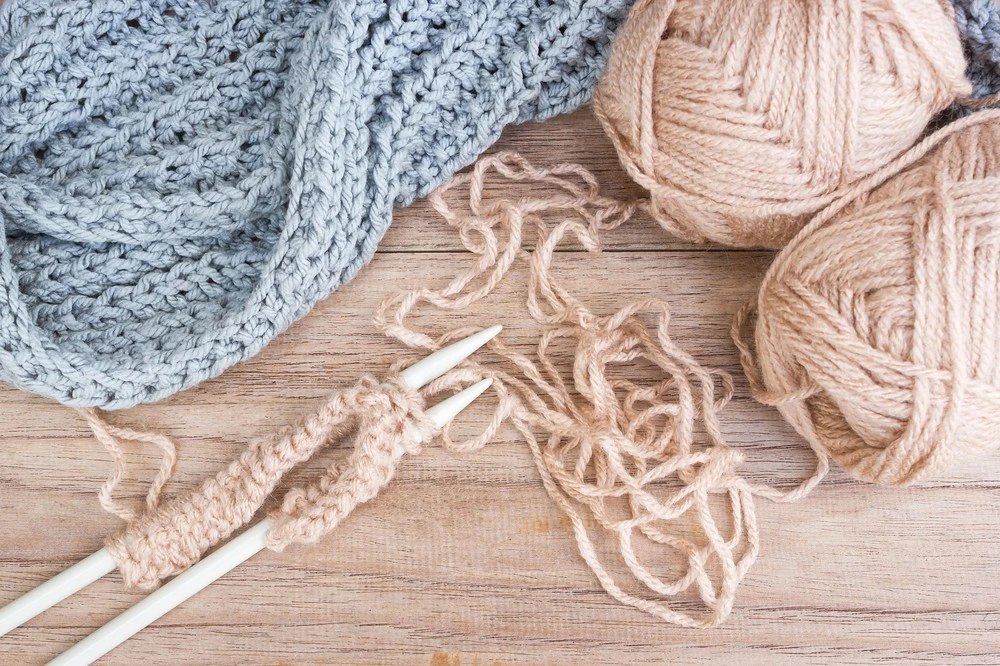
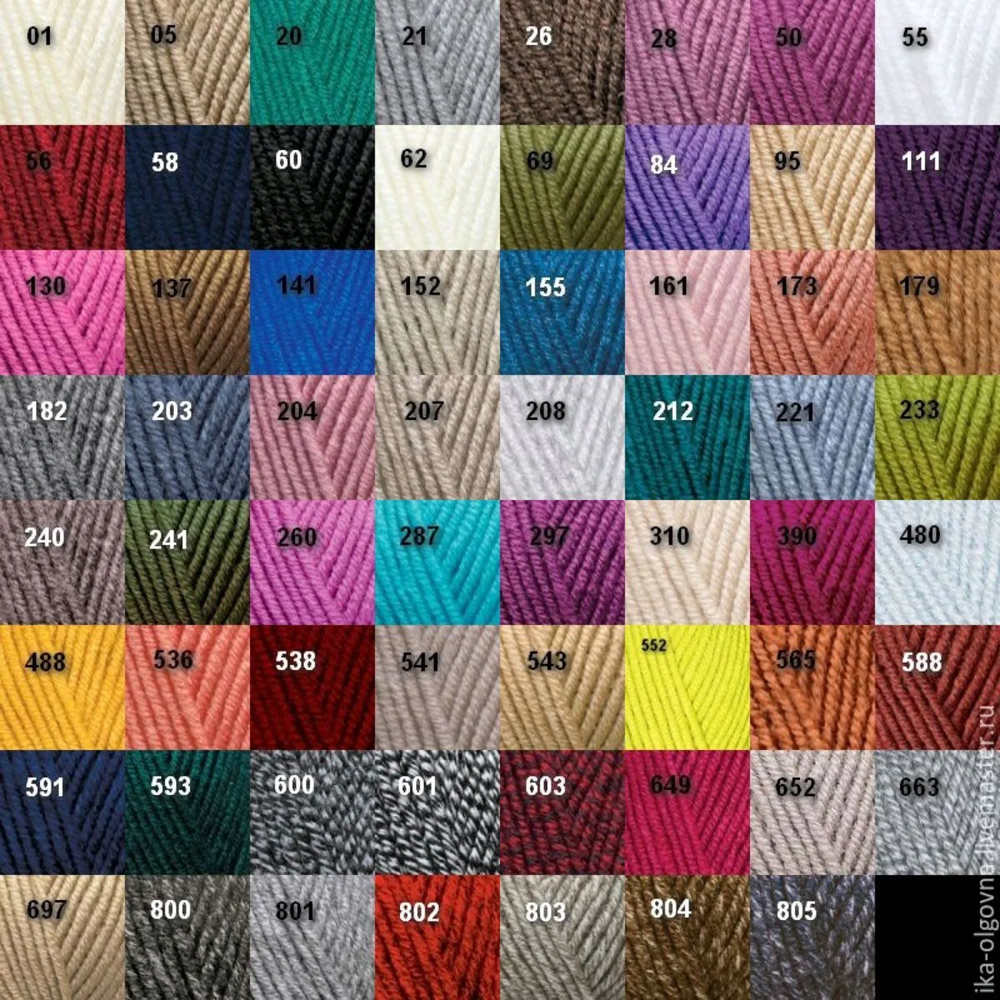

Дорогие мои друзья! Я просто не могу скрыть своего восторга от своего последнего творения. Это было настоящим творческим вдохновением! Я вязала этот свитер с таким удовольствием, что словами просто не передать. Каждая петля, каждый узор – все это было создано с любовью и страстью к рукоделию. Я рада, что могу поделиться этим произведением со всеми вами, моими дорогими единомышленниками. Надеюсь, что этот свитер принесет радость и тепло своему будущему обладателю, так же как он принес мне удовлетворение от самого процесса создания.
Дорогие читатели и участники нашего портала Crochet & Knitting! Мы рады сообщить вам об обновлениях, которые произошли на нашем портале. Мы постоянно работаем над тем, чтобы делать наш ресурс еще более удобным, информативным и вдохновляющим для всех любителей вязания.
В последнее время мы добавили новые разделы с оригинальными узорами, инструкциями и видеоуроками, чтобы помочь вам воплотить в жизнь ваши творческие идеи. Мы также расширили раздел с обзорами пряжи и инструментов, чтобы вы могли выбирать лучшие материалы для своих проектов.
Мы хотим выразить огромную благодарность всем нашим пользователям, чьи отзывы, предложения и творческие работы помогают нам сделать наш портал лучше. Ваши комментарии и отзывы – это то, что дает нам силы двигаться вперед и совершенствовать наш ресурс.
Мы приглашаем вас продолжать делиться своими работами, идеями и отзывами. Ваше участие делает нас сильнее, а ваше творчество вдохновляет нас на новые достижения. Спасибо, что выбираете наш портал для вашего рукодельного творчества! С любовью, команда Crochet & Knitting.
Сегодня начала вязать новый свитер. Обожаю создавать уютные вещи своими руками! Вязание для меня не просто хобби, это способ выразить свою индивидуальность и творческий потенциал. Я выбрала мягкую пряжу нежного оттенка, чтобы создать что-то теплое и уютное. Надеюсь, что этот свитер станет моим любимым предметом гардероба!
Какой цвет пряжи выбрать для следующего проекта? Помогите выбрать! Я нахожусь в творческом тупике и не могуопределиться с выбором. Может быть, вы подскажете мне что-то интересное? Я люблю экспериментировать с цветами итекстурами, поэтому буду благодарна за любые идеи и рекомендации.
